Υποβάθμιση, Αποκατάσταση και Βελτίωση Ψηφιακής Εικόνας
Πειραματική μελέτη σε χωρικό πεδίο και πεδίο συχνοτήτων, με αντικειμενική αξιολόγηση σε 8 περιπτώσεις υποβάθμισης
Ονοματεπώνυμο: ⟨συμπληρώστε⟩ Αριθμός Μητρώου: ⟨συμπληρώστε⟩ Ακαδημαϊκό έτος: 2025–2026
Τελική Εργασία · Σεπτέμβριος 2026
Περίληψη
Η εργασία υλοποιεί και αξιολογεί πειραματικά μια πλήρη αλυσίδα ψηφιακής επεξεργασίας
εικόνας: τεχνητή υποβάθμιση → αποκατάσταση → βελτίωση → ανίχνευση ακμών. Ως εικόνες
αναφοράς επιλέχθηκαν δύο σκόπιμα αντίθετες περιπτώσεις — η Cameraman (υψηλή αντίθεση,
πλούσια υψίσυχνη λεπτομέρεια) και η Moon (χαμηλή αντίθεση, ομαλές διαβαθμίσεις) — και
υποβλήθηκαν σε τέσσερις υποβαθμίσεις δύο διαφορετικών φύσεων: προσθετικό γκαουσιανό θόρυβο
(σ = 10, 25) και κρουστικό θόρυβο τύπου salt-and-pepper (d = 2 %, 10 %), δηλαδή 8
περιπτώσεις μελέτης συνολικά.
Για κάθε περίπτωση εκτελέστηκε εξαντλητική σάρωση παραμέτρων: 96 πειράματα χωρικών φίλτρων
(Gaussian, Median, Bilateral), 360 πειράματα φίλτρων συχνοτήτων (ιδανικό, Butterworth
τάξεων n = 1, 2, 5 και γκαουσιανό χαμηλοπερατό, σε 9 συχνότητες αποκοπής), και τελική
συγκριτική αξιολόγηση 57 μεθόδων αποκατάστασης ανά περίπτωση. Η αξιολόγηση έγινε με
MSE / PSNR / SSIM, με συμπληρωματικά μέτρα ευκρίνειας, εντροπίας και αξιοποίησης δυναμικής
περιοχής, και τελικά με precision / recall / F1 σε ανίχνευση ακμών — μια πραγματική
εργασία όρασης που κρίνει αν η αποκατάσταση απέδωσε πέρα από τους δείκτες.
Τα κύρια ευρήματα. (α) Δεν υπάρχει καθολικά βέλτιστο φίλτρο: το Median κερδίζει και
στις 4 περιπτώσεις κρουστικού θορύβου, το Bilateral / Butterworth και στις 4 περιπτώσεις
γκαουσιανού, χωρίς καμία εξαίρεση. (β) Η βέλτιστη συχνότητα αποκοπής προβλέπεται από
την ανάλυση φάσματος του Σταδίου 3 και επαληθεύεται σε 8/8 περιπτώσεις, χωρίς ανάγκη
δοκιμών. (γ) Η επιλογή πεδίου (χωρικό ή συχνοτήτων) είναι πρακτικά αδιάφορη για τον
γκαουσιανό θόρυβο (±1 dB, όπως επιβάλλει το θεώρημα συνέλιξης) αλλά κρίσιμη για τον
κρουστικό (+2,8 έως +7,1 dB υπέρ του χωρικού). (δ) Η αποκατάσταση αποδεικνύεται χρήσιμη
στην πράξη: το F1 ανίχνευσης ακμών ανεβαίνει από 0,318 σε 0,956 στη δυσκολότερη περίπτωση.
(ε) Η βελτίωση αντίθεσης έχει χαμηλότερο PSNR από την αποκατάσταση, και αυτό είναι
αναμενόμενο, όχι σφάλμα: μετρήθηκε με τα σωστά μεγέθη (εντροπία, επίπεδα γκρι σε χρήση:
69 % → 97 %).
Όλα τα αριθμητικά αποτελέσματα είναι πλήρως αναπαραγώγιμα (RANDOM_SEED = 631 με ανά
πείραμα γεννήτρια τυχαίων αριθμών).
Κάθε πραγματική εικόνα φτάνει στον υπολογιστή αλλοιωμένη. Ο αισθητήρας προσθέτει θερμικό
και φωτονικό θόρυβο, το κανάλι μετάδοσης προκαλεί σφάλματα, η οπτική διάταξη θολώνει.
Η ψηφιακή επεξεργασία εικόνας απαντά σε αυτό με δύο διαφορετικές οικογένειες τεχνικών,
που συχνά συγχέονται:
Αποκατάσταση (restoration). Πρόβλημα αντιστροφής. Υποθέτουμε γνωστό μοντέλο
υποβάθμισης και προσπαθούμε να προσεγγίσουμε την άγνωστη αρχική εικόνα. Έχει
αντικειμενικό κριτήριο επιτυχίας: η απόσταση από την εικόνα αναφοράς (PSNR, SSIM).
Βελτίωση (enhancement). Δεν υπάρχει «σωστή απάντηση». Στόχος είναι μια εικόνα πιο
χρήσιμη για έναν παρατηρητή ή για τον επόμενο αλγόριθμο. Μια πετυχημένη βελτίωση
μπορεί κάλλιστα να απομακρύνεται από την αναφορά — και συνήθως απομακρύνεται.
Η εργασία αυτή δεν εξετάζει τις δύο οικογένειες χωριστά· τις τοποθετεί σε αλυσίδα και
μετρά τι προσφέρει η καθεμία, με ποια σειρά, και με ποιο κόστος.
1.2 Στόχοι
Να μοντελοποιηθεί τεχνητή υποβάθμιση δύο διαφορετικών φύσεων (στατιστική και
κρουστική) σε ελεγχόμενες εντάσεις, ώστε να υπάρχει γνωστό ground truth.
Να αναλυθεί η υποβάθμιση στο πεδίο συχνοτήτων και να εξαχθεί από εκεί πρόβλεψη για
τον σχεδιασμό των φίλτρων.
Να συγκριθεί η αποκατάσταση στο χωρικό πεδίο (φίλτρα συνέλιξης και τάξης) με την
αποκατάσταση στο πεδίο συχνοτήτων (χαμηλοπερατά φίλτρα), με ίδια κριτήρια.
Να εφαρμοστεί βελτίωση αντίθεσης και να τεκμηριωθεί πειραματικά η σωστή θέση της
μέσα στην αλυσίδα.
Να κριθεί όλη η αλυσίδα με ανίχνευση ακμών — μια πραγματική εργασία όρασης, όχι μόνο
έναν δείκτη ποιότητας.
Όλα τα παραπάνω με αναπαραγώγιμα πειράματα και σάρωση παραμέτρων, όχι με μεμονωμένες
αυθαίρετες επιλογές.
1.3 Δομή της εργασίας σε στάδια
Η υλοποίηση οργανώνεται σε οκτώ στάδια που εκτελούνται διαδοχικά και τροφοδοτούν το ένα το
άλλο:
Στάδιο
Αντικείμενο
Έξοδος που χρησιμοποιείται παρακάτω
1
Εικόνες αναφοράς (ground truth)
οι 2 καθαρές εικόνες
2
Τεχνητή υποβάθμιση + μετρικές
8 υποβαθμισμένες εικόνες
3
Ανάλυση FFT / φάσματος
η ακτίνα r(SNR=1) → Στάδιο 5
4
Αποκατάσταση, χωρικό πεδίο
βέλτιστο χωρικό φίλτρο ανά περίπτωση
5
Αποκατάσταση, πεδίο συχνοτήτων
βέλτιστο χαμηλοπερατό ανά περίπτωση
6
Βελτίωση αντίθεσης (HE / CLAHE)
σειρά αλυσίδας, τελική εικόνα
7
Ανίχνευση ακμών (Sobel / Canny)
F1 ως τελικό κριτήριο
8
Συγκεντρωτική αξιολόγηση
συγκριτικοί πίνακες & συμπεράσματα
2. Μεθοδολογία και υλοποίηση
2.1 Συμβάσεις
Όλη η εργασία δουλεύει με grayscale εικόνες uint8 στο [0, 255], μεγέθους 512×512. Το
τετράγωνο μέγεθος διευκολύνει τον DFT του Σταδίου 3. Κάθε πράξη πραγματοποιείται εσωτερικά
σε float64 και το αποτέλεσμα επιστρέφει σε uint8 με clipping στο [0, 255] — το
clipping δεν είναι υπολογιστική παραδοχή αλλά μέρος του φυσικού μοντέλου (κορεσμός
αισθητήρα). Η αποθήκευση γίνεται πάντα σε PNG (lossless): τα artifacts μιας συμπίεσης
JPEG θα μολύνανε τις μετρήσεις θορύβου.
2.2 Αναπαραγωγιμότητα
Ο σπόρος τυχαιότητας είναι σταθερός (RANDOM_SEED = 631), αλλά — κρίσιμο σημείο — δεν
χρησιμοποιείται μία κοινή γεννήτρια. Κάθε πείραμα παίρνει τη δική του γεννήτρια μέσω της
degradation.rng_for(image_key, variant_key), σπαρμένη ντετερμινιστικά από τον κύριο σπόρο.
Έτσι ο θόρυβος μιας συγκεκριμένης περίπτωσης είναι ίδιος ανεξάρτητα από το ποια και πόσα
στάδια έτρεξαν πριν. Με μία κοινή γεννήτρια, το python main.py --stage 2 θα έδινε
διαφορετικά PSNR από το python main.py --stage 1 2, και καμία σύγκριση δεν θα ήταν
ασφαλής.
2.3 Οργάνωση του κώδικα
main.py ενορχηστρωτής — run_stage1() … run_stage8()
src/config.py όλες οι παράμετροι των πειραμάτων σε ένα σημείο
src/io_utils.py φόρτωση / μετατροπή / αποθήκευση
src/metrics.py MSE, PSNR, SSIM, εντροπία, ευκρίνεια
src/viz.py εικόνες, ιστογράμματα, πλέγματα, καμπύλες, ραβδογράμματα
src/tables.py πίνακες → τερματικό / .csv / .md
src/degradation.py Στάδιο 2 — γκαουσιανός & salt-and-pepper θόρυβος
src/frequency_filters.py Στάδια 3 & 5 — FFT, ιδανικό / Butterworth / γκαουσιανό ΧΠΦ
src/spatial_filters.py Στάδιο 4 — Gaussian / Median / Bilateral
src/enhancement.py Στάδιο 6 — γραμμική διάταση, HE, CLAHE
src/edges.py Στάδιο 7 — Sobel, Canny, αξιολόγηση χάρτη ακμών
results/stageN_.../ όλες οι εικόνες και οι πίνακες κάθε σταδίου
Η επιλογή να μπουν όλες οι παράμετροι στο config.py δεν είναι καλλωπισμός: επιτρέπει
να αλλάξει ένα πείραμα (π.χ. να προστεθεί τάξη Butterworth) και η αλλαγή να διαδοθεί
αυτόματα σε σάρωση, γκαλερί πυρήνων και τελική σύγκριση, χωρίς να ξεχαστεί κάποιο σημείο.
2.4 Μετρικές αξιολόγησης
Για δύο εικόνες f (αναφορά) και g (υπό εξέταση), μεγέθους M×N:
Μέγεθος
Ορισμός
Τι μετρά — και πού αποτυγχάνει
MSE
(1/MN)·Σ(f − g)²
μέσο τετραγωνικό σφάλμα ανά pixel
PSNR (dB)
10·log₁₀(255² / MSE)
λόγος σήματος προς θόρυβο· τιμωρεί δυσανάλογα λίγες ακραίες αποκλίσεις (τετραγωνίζει), άρα είναι κακός κριτής για κρουστικό θόρυβο
SSIM
τοπική σύγκριση φωτεινότητας, αντίθεσης, δομής
δομική ομοιότητα· πλησιάζει την ανθρώπινη αντίληψη
Ευκρίνεια
Var(∇²g) ως % της τιμής της αναφοράς
πόση υψίσυχνη δομή απέμεινε· τιμή >100 % σημαίνει υπόλειμμα θορύβου, όχι επιτυχία
Εντροπία
−Σ p·log₂p του ιστογράμματος
πληροφορία σε bits· ο θόρυβος την ανεβάζει, άρα συγκρίνεται μόνο μεταξύ εικόνων με τον ίδιο θόρυβο
Επίπεδα σε χρήση
% των 256 επιπέδων με μη μηδενική συχνότητα
αξιοποίηση δυναμικής περιοχής
P / R / F1
επί του χάρτη ακμών, με ανοχή θέσης 2 pixel
ποιότητα ανίχνευσης ακμών ως τελικό κριτήριο χρησιμότητας
Η αρχή που διατρέχει όλη την εργασία είναι ότι καμία μεμονωμένη μετρική δεν αρκεί.
Θα δούμε περιπτώσεις όπου PSNR και SSIM δίνουν διαφορετικό νικητή, και μία όπου το PSNR
ανεβαίνει ενώ το SSIM πέφτει.
3. Στάδιο 1 — Εικόνες αναφοράς
3.1 Επιλογή και προετοιμασία
Επιλέχθηκαν δύο εικόνες από τη συλλογή skimage.data (διαθέσιμες offline, χωρίς εξωτερική
λήψη): η camera (Cameraman) και η moon (Moon). Και οι δύο μετατράπηκαν σε grayscale
uint8 και αναδιαστάθηκαν σε 512×512.
Η επιλογή δεν είναι τυχαία: οι δύο εικόνες είναι σκόπιμα αντίθετες, ώστε κάθε τεχνική
που ακολουθεί να δοκιμάζεται σε δύο άκρα του φάσματος περιεχομένου.
Πίνακας 1 — Χαρακτηριστικά των εικόνων αναφοράς
Εικόνα
Μέση τιμή
Τυπική απόκλιση
Μέσο |∇| (Sobel)
Ακμές Canny
Cameraman
129,06
73,64
49,30
7,51 %
Moon
112,17
13,33
14,84
0,44 %
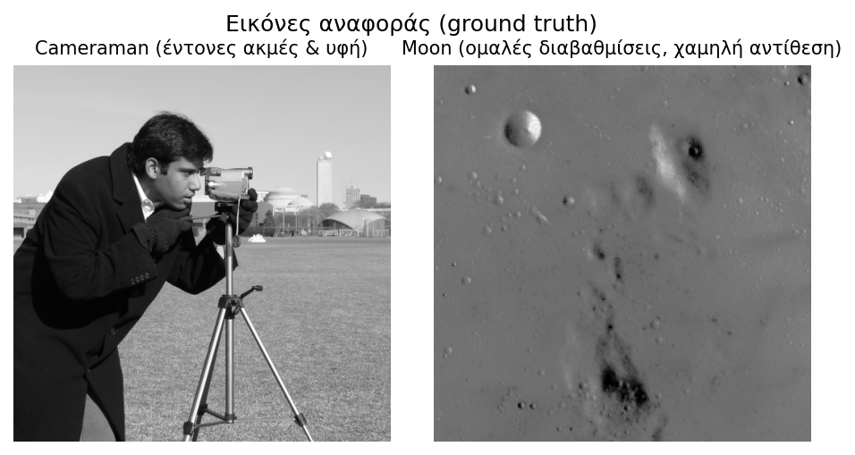
Εικόνα 1. Οι δύο εικόνες αναφοράς (ground truth): Cameraman και Moon.
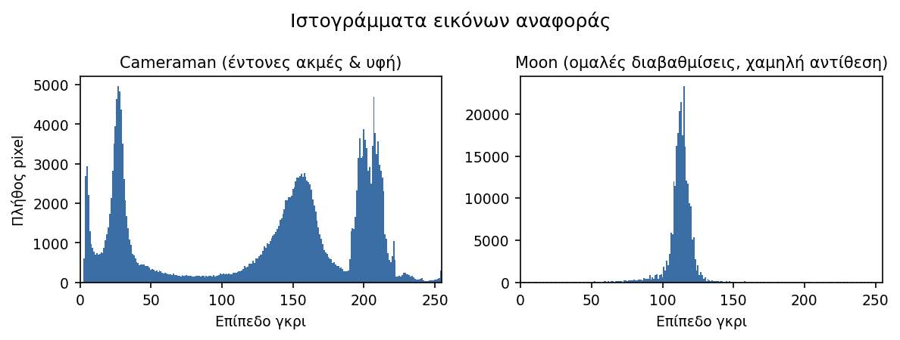
Εικόνα 2. Ιστογράμματα των εικόνων αναφοράς. Το πλατύ ιστόγραμμα του Cameraman έναντι του πολύ στενού της Moon είναι η ποσοτική εικόνα της διαφοράς αντίθεσης.
3.2 Σχολιασμός
Η Cameraman έχει τυπική απόκλιση 73,6 — πλατύ ιστόγραμμα, υψηλή αντίθεση. Το μεγάλο
μέσο μέτρο κλίσης (49,3) και το 7,5 % ακμών σημαίνουν πλούσια υψίσυχνη πληροφορία
(τρίποδο, κτίρια, υφή γρασιδιού). Εδώ θα φανεί το κόστος των χαμηλοπερατών φίλτρων:
ό,τι εξομάλυνση αφαιρεί θόρυβο, αφαιρεί και πραγματική λεπτομέρεια.
Η Moon έχει τυπική απόκλιση μόλις 13,3 και σχεδόν καθόλου ακμές (0,44 %). Είναι η
τυπική «χαμηλής αντίθεσης» εικόνα όπου θα λάμψουν οι τεχνικές βελτίωσης του Σταδίου 6 —
και όπου, όπως θα δούμε, ο ίδιος θόρυβος πονάει πολύ περισσότερο, γιατί είναι
συγκρίσιμος με το ίδιο το σήμα.
Δύο μεγέθη αξίζουν προσοχή γιατί επανέρχονται σε όλη την εργασία: η τυπική απόκλιση του
ιστογράμματος ως μέτρο αντίθεσης, και το μέσο μέτρο κλίσης ως ένδειξη του πόσο
«υψίσυχνη» είναι μια εικόνα.
4. Στάδιο 2 — Τεχνητή υποβάθμιση
4.1 Τα δύο μοντέλα θορύβου
Υλοποιήθηκαν δύο μοντέλα διαφορετικής φύσης, όχι δύο εντάσεις του ίδιου:
Μοντελοποιεί θερμικό θόρυβο αισθητήρα και θόρυβο ενισχυτή. Μεταβάλλει κάθε pixel, αλλά
λίγο.
Κρουστικός θόρυβος salt-and-pepper
ποσοστό d των pixel αντικαθίσταται: τα μισά με 255 (salt), τα μισά με 0 (pepper)
d ∈ {2 %, 10 %}
Μοντελοποιεί σφάλματα μετάδοσης και ελαττωματικά στοιχεία αισθητήρα. Μεταβάλλει ελάχιστα
pixel, αλλά ακραία.
Το γινόμενο 2 εικόνες × 4 παραλλαγές δίνει τις 8 περιπτώσεις μελέτης που ακολουθούν
την εργασία ως το τέλος.
4.2 Αποτελέσματα
Πίνακας 2 — Μετρικές υποβάθμισης
Εικόνα
Υποβάθμιση
Pixel που άλλαξαν
σ̂ θορύβου
max|Δ|
PSNR (dB)
SSIM
Cameraman
Gauss σ=10
95,95 %
9,89
47
28,22
0,6101
Cameraman
Gauss σ=25
98,35 %
23,85
118
20,58
0,3020
Cameraman
S&P d=2 %
1,99 %
20,82
255
21,76
0,6291
Cameraman
S&P d=10 %
9,98 %
46,66
255
14,75
0,1917
Moon
Gauss σ=10
96,01 %
10,01
45
28,12
0,4442
Moon
Gauss σ=25
98,38 %
25,00
111
20,17
0,1277
Moon
S&P d=2 %
1,99 %
18,24
255
22,91
0,4795
Moon
S&P d=10 %
10,03 %
40,82
255
15,91
0,0695
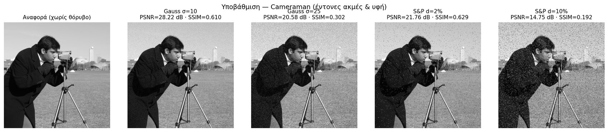
Εικόνα 3. Cameraman: αναφορά και οι τέσσερις υποβαθμίσεις, με PSNR/SSIM στους τίτλους.
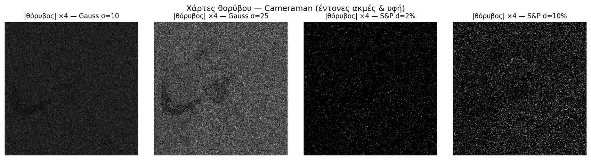
Εικόνα 4. Χάρτες θορύβου |g − f| (×4). Πυκνό «χιόνι» παντού για τον γκαουσιανό, αραιές φωτεινές κουκκίδες για τον S&P: η οπτική εκδοχή της διαφοράς «στατιστικός έναντι κρουστικού».
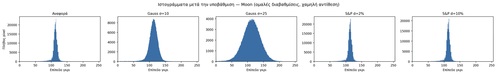
Εικόνα 5. Moon: επίδραση στο ιστόγραμμα. Ο γκαουσιανός θόρυβος απλώνει το ιστόγραμμα (συνέλιξη με γκαουσιανή), ενώ ο S&P προσθέτει δύο αιχμές-δέλτα στο 0 και στο 255 αφήνοντας το υπόλοιπο σχήμα άθικτο.
4.3 Σχολιασμός
Επαλήθευση του μοντέλου. Το εκτιμώμενο σ̂ βγαίνει σχεδόν ακριβώς όσο ζητήθηκε
(9,89 ≈ 10· 23,85 ≈ 25) και το ποσοστό των αλλαγμένων pixel 1,99 % ≈ 2 % και
10,03 % ≈ 10 %. Η μικρή υποεκτίμηση στο σ = 25 οφείλεται στο clipping στο [0, 255],
που κόβει τις ακραίες ουρές του θορύβου.
Η στήλη max|Δ| διαχωρίζει τις δύο φύσεις. Γκαουσιανός: κάθε pixel, μεταβολή ~3σ–5σ.
S&P: ελάχιστα pixel, μεταβολή πάντα 255. Ο πρώτος είναι στατιστικός, ο δεύτερος
είναι outliers — και αυτό καθορίζει ποιο φίλτρο θα δουλέψει στο Στάδιο 4.
PSNR και SSIM διαφωνούν, και η διαφωνία είναι διδακτική. Στον Cameraman, το
S&P d = 2 % έχει χειρότερο PSNR (21,76) από τον γκαουσιανό σ = 10 (28,22) αλλά
καλύτερο SSIM (0,629 έναντι 0,610). Το PSNR στηρίζεται στο MSE, που τετραγωνίζει και
άρα τιμωρεί αλύπητα τις λίγες ακραίες αποκλίσεις. Το SSIM μετρά δομή: στο S&P το 98 %
της εικόνας μένει ανέγγιχτο, ενώ ο γκαουσιανός διαβρώνει τη δομή παντού.
Η Moon πληγώνεται περισσότερο στο SSIM (0,444 έναντι 0,610 του Cameraman για τον ίδιο
θόρυβο), παρότι το PSNR είναι σχεδόν ίδιο. Ο λόγος είναι ο τοπικός λόγος σήματος προς
θόρυβο: με τυπική απόκλιση σήματος 13,3, ένας θόρυβος σ = 10 είναι συγκρίσιμος με το
ίδιο το σήμα. Στον Cameraman (73,6) χάνεται μέσα στην αντίθεση.
Πρόβλεψη για τα Στάδια 4–5. Ο γκαουσιανός θόρυβος είναι ευρυζωνικός/λευκός στο πεδίο
συχνοτήτων και άρα αντιμετωπίζεται με γραμμικά φίλτρα. Ο S&P είναι κρουστικός: τα γραμμικά
φίλτρα δεν τον αφαιρούν, τον απλώνουν στους γείτονες· χρειάζεται φίλτρο τάξης (median),
που απορρίπτει τα outliers εξ ορισμού.
5. Στάδιο 3 — Ανάλυση στο πεδίο συχνοτήτων
5.1 Τι υπολογίστηκε
Για κάθε εικόνα αναλύθηκαν πέντε εκδοχές (αναφορά + 4 υποβαθμισμένες) με κεντραρισμένο DFT
(fftshift, δηλαδή DC στο κέντρο): φάσμα πλάτους σε λογαριθμική κλίμακα, ακτινικό προφίλ
ισχύος, αθροιστική ενέργεια ανά ακτίνα, και η ακτίνα όπου η ισχύς του θορύβου
εξισώνεται με την ισχύ του σήματος, r(SNR=1). Αναλύθηκε επιπλέον το φάσμα του ίδιου του
θορύβου (g − f), για άμεση επιβεβαίωση ότι είναι λευκός.
5.2 Τέσσερις σχεδιαστικές αποφάσεις
Λογαριθμική κλίμακα στο φάσμα. Η συνιστώσα DC είναι τάξεις μεγέθους πάνω από τις
υπόλοιπες· χωρίς log(1+|F|) θα βλέπαμε μία λευκή κουκκίδα σε μαύρο φόντο.
Αποκλεισμός της DC από τις μετρήσεις ενέργειας. Η DC κουβαλά τη μέση φωτεινότητα,
όχι δομή. Αν την κρατούσαμε, το «90 % της ενέργειας» θα βρισκόταν μέσα σε ακτίνα ~0,01
για κάθε εικόνα και η μέτρηση δεν θα ξεχώριζε τίποτα. Αφαιρώντας την, μετράμε την
ενέργεια των μεταβολών.
Μέση ισχύς ανά δακτύλιο, όχι άθροισμα. Οι μεγάλες ακτίνες περιέχουν πολύ
περισσότερους συντελεστές, οπότε το άθροισμα θα τις ευνοούσε τεχνητά.
Κανονικοποίηση ακτίνας στο Nyquist:r = 0 είναι η DC και r = 1 η μέγιστη
συχνότητα κατά τους άξονες. Οι γωνίες του τετράγωνου φάσματος φτάνουν ως r = √2,
γι' αυτό εμφανίζονται τιμές > 1.
5.3 Αποτελέσματα
Πίνακας 3 — Κατανομή ενέργειας στο φάσμα
Εικόνα
Εκδοχή
Ενέργεια σε r>0,25
r(90 %)
r(95 %)
r(99 %)
r(SNR=1)
Cameraman
Αναφορά
2,92 %
0,061
0,157
0,566
—
Cameraman
Gauss σ=10
4,56 %
0,080
0,227
0,887
0,713
Cameraman
Gauss σ=25
11,96 %
0,406
0,823
1,119
0,370
Cameraman
S&P d=2 %
9,96 %
0,249
0,732
1,088
0,403
Cameraman
S&P d=10 %
32,99 %
0,945
1,055
1,246
0,249
Moon
Αναφορά
5,35 %
0,146
0,265
0,798
—
Moon
Gauss σ=10
37,91 %
0,964
1,072
1,254
0,271
Moon
Gauss σ=25
75,80 %
1,083
1,174
1,306
0,138
Moon
S&P d=2 %
64,64 %
1,055
1,152
1,295
0,193
Moon
S&P d=10 %
87,99 %
1,105
1,193
1,315
0,094
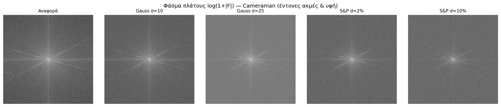
Εικόνα 6. Cameraman: φάσματα πλάτους log(1+|F|) της αναφοράς και των τεσσάρων υποβαθμισμένων εκδοχών.
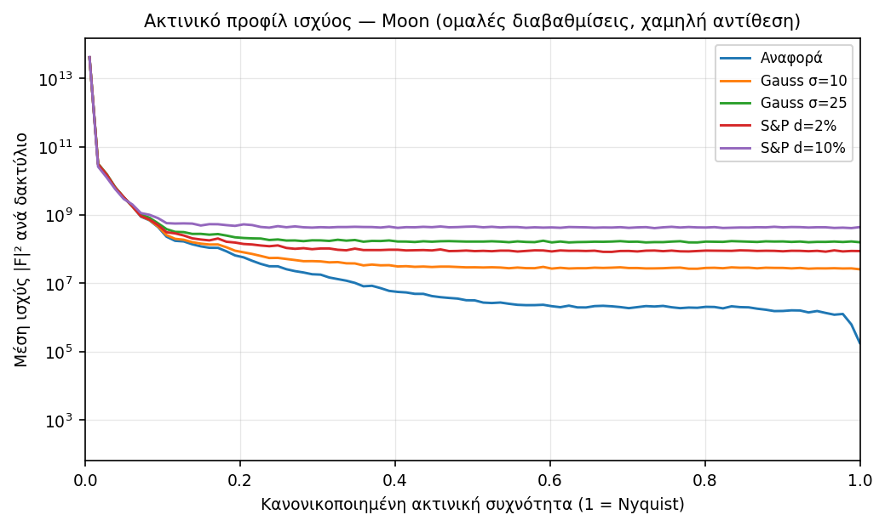
Εικόνα 7. Moon — ακτινικό προφίλ ισχύος. Οι θορυβώδεις καμπύλες ταυτίζονται με την καθαρή στις χαμηλές συχνότητες και μετά επιπεδώνονται σε οριζόντιο πλατό: αυτός είναι ο ορισμός του λευκού θορύβου. Η καθαρή εικόνα πέφτει μονότονα.
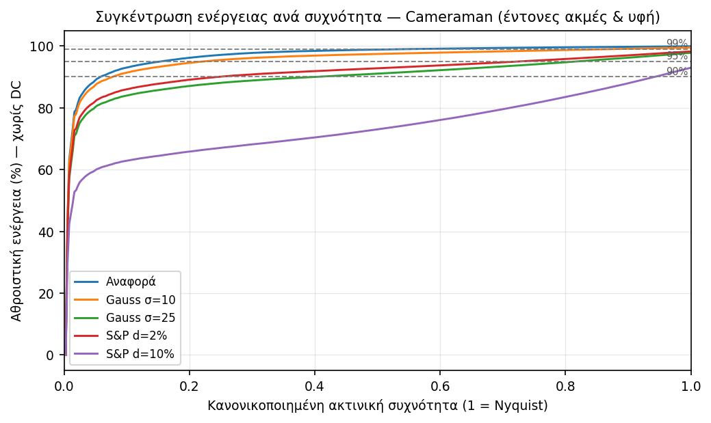
Εικόνα 8. Cameraman — αθροιστική ενέργεια ανά ακτίνα. Στην καθαρή εικόνα το 90 % της ενέργειας χωράει μέσα σε ακτίνα 0,061.
5.4 Σχολιασμός
Οι φυσικές εικόνες είναι χαμηλοπερατές. Στην καθαρή Cameraman μόλις 2,92 % της
ενέργειας βρίσκεται πέρα από r = 0,25, και το 90 % χωράει σε ακτίνα 0,061 — δηλαδή
σε ~0,4 % του εμβαδού του φάσματος. Αυτή η ασυμμετρία είναι η βάση τόσο της συμπίεσης
εικόνας (JPEG) όσο και κάθε χαμηλοπερατής αποθορυβοποίησης.
Ο θόρυβος είναι λευκός, και φαίνεται. Το οριζόντιο πλατό των θορυβωδών καμπυλών
(Εικόνα 7) σημαίνει ίδια ισχύς σε κάθε συχνότητα.
Το πλατό ανεβαίνει με το σ². Από σ = 10 σε σ = 25 η καμπύλη ανεβαίνει περίπου ×6,
δηλαδή (25/10)² — ακριβώς όπως προβλέπει η θεωρία.
Ο S&P είναι κι αυτός ευρυζωνικός. Στο φάσμα μοιάζει με λευκό θόρυβο, γι' αυτό ένα
χαμηλοπερατό φίλτρο κάτι θα κάνει· αλλά στο πεδίο του χώρου παραμένει ακραίες
μεμονωμένες τιμές. Αυτή η διπλή φύση εξηγεί προκαταβολικά γιατί στο Στάδιο 5 τα
χαμηλοπερατά θα βελτιώσουν το PSNR χωρίς όμως να πλησιάσουν το median: ένα impulse
απλωμένο σε 25 pixel εξακολουθεί να είναι σφάλμα.
Η Moon πλήττεται δραματικά περισσότερο. Ο ίδιος θόρυβος (σ = 10) ανεβάζει την ενέργεια
υψηλών συχνοτήτων της Moon από 5,35 % σε 37,91 %, ενώ του Cameraman μόνο από 2,92 %
σε 4,56 %. Η Moon έχει ελάχιστη δική της ενέργεια εκεί, οπότε ο θόρυβος κυριαρχεί.
Είναι η ίδια παρατήρηση με το χαμηλό SSIM του Σταδίου 2, ιδωμένη από το πεδίο συχνοτήτων.
Η στήλη r(SNR=1) είναι το παραδοτέο προς το Στάδιο 5. Δείχνει πού η ισχύς του
θορύβου ξεπερνά την ισχύ του σήματος· πέρα από εκεί κόβουμε σχεδόν αποκλειστικά θόρυβο.
Η τιμή δεν είναι σταθερά: 0,71 για Cameraman/σ = 10 (κόψε λίγο, υπάρχει χρήσιμη
λεπτομέρεια), 0,09 για Moon/S&P 10 % (κόψε επιθετικά). Όσο χειρότερος ο θόρυβος και
όσο πιο ομαλή η εικόνα, τόσο χαμηλότερη η συχνότητα αποκοπής.
6. Στάδιο 4 — Αποκατάσταση στο χωρικό πεδίο
6.1 Τα τρία φίλτρα
Επιλέχθηκαν τρία φίλτρα διαφορετικής λογικής, όχι τρεις παραλλαγές του ίδιου:
Φίλτρο
Είδος
Αρχή λειτουργίας
Gaussian
γραμμικό (συνέλιξη)
σταθμισμένος μέσος όρος γειτονιάς· ο μέσος όρος N ανεξάρτητων δειγμάτων μειώνει το σ κατά √N
Median
μη γραμμικό, φίλτρο τάξης
επιστρέφει τη διάμεσο της γειτονιάς· απορρίπτει outliers (σημείο κατάρρευσης 50 %)
Bilateral
μη γραμμικό, edge-preserving
διπλός πυρήνας: χωρική εγγύτητα × ομοιότητα έντασης· δεν σταθμίζει πάνω από ακμές
Αντί για μία αυθαίρετη παράμετρο ανά φίλτρο, έγινε σάρωση: 4 μεγέθη πυρήνα ανά
οικογένεια × 4 υποβαθμίσεις × 2 εικόνες = 96 πειράματα (spatial_sweep.csv).
6.2 Δύο μεθοδολογικές αποφάσεις
Κάθε οικογένεια κρίνεται στο δικό της βέλτιστο. Διαφορετικά θα «καταδικάζαμε» ένα
φίλτρο επειδή του δώσαμε κακή παράμετρο — σφάλμα σχεδιασμού πειράματος, όχι εύρημα.
Δεύτερη μετρική δίπλα στο PSNR. Το φιλτράρισμα σχεδόν πάντα ανεβάζει το PSNR όσο
αφαιρεί θόρυβο, αλλά αφαιρεί μαζί και λεπτομέρεια. Χωρίς μέτρο ευκρίνειας το κόστος
μένει αόρατο.
6.3 Αποτελέσματα
Πίνακας 4 — Καλύτερο αποτέλεσμα ανά οικογένεια (PSNR σε dB, με τη βέλτιστη παράμετρο)
Εικόνα
Υποβάθμιση
PSNR πριν
Gaussian
Median
Bilateral
Cameraman
Gauss σ=10
28,22
30,23 (3×3)
29,26 (3×3)
32,09 (σc=25)
Cameraman
Gauss σ=25
20,58
27,17 (5×5)
26,31 (5×5)
27,86 (σc=50)
Cameraman
S&P d=2 %
21,76
27,64 (3×3)
30,40 (3×3)
26,45
Cameraman
S&P d=10 %
14,75
23,92 (7×7)
29,58 (3×3)
21,45
Moon
Gauss σ=10
28,12
37,53 (7×7)
36,39 (5×5)
37,94 (σc=25)
Moon
Gauss σ=25
20,17
33,82 (9×9)
33,52 (9×9)
34,00 (σc=100)
Moon
S&P d=2 %
22,91
35,37 (9×9)
40,42 (3×3)
36,31
Moon
S&P d=10 %
15,91
30,28 (9×9)
39,72 (3×3)
29,49
Ευκρίνεια στα ίδια βέλτιστα, ως % της αναφοράς (Cameraman / Gauss σ = 25):
Gaussian 13,8 %, Median 25,3 %, Bilateral 71,1 %.
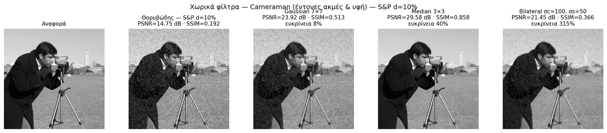
Εικόνα 9. Cameraman / S&P d = 10 %: σύγκριση των τριών φίλτρων στα βέλτιστά τους. Το Median καθαρίζει πλήρως τα impulses· το Gaussian τα απλώνει σε κηλίδες· το Bilateral τα αφήνει σχεδόν ανέπαφα, επειδή τα εκλαμβάνει ως ακμές προς διατήρηση.
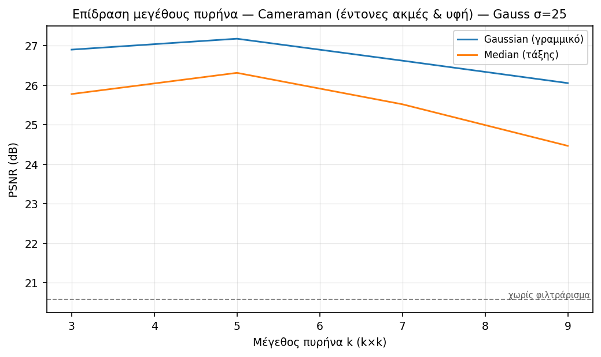
Εικόνα 10. PSNR συναρτήσει του μεγέθους πυρήνα (Cameraman / Gauss σ = 25). Η κορυφή κάθε καμπύλης είναι το σημείο ισορροπίας του συμβιβασμού bias–variance.
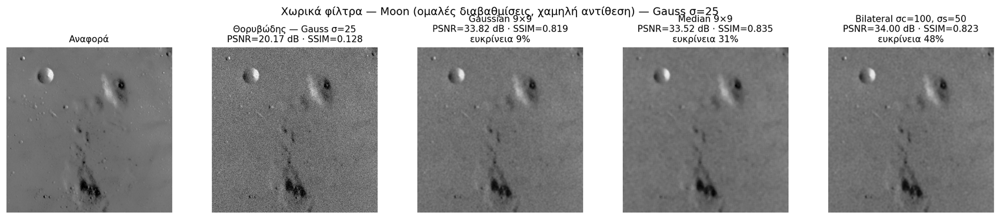
Εικόνα 11. Moon / Gauss σ = 25: στην ομαλή εικόνα και τα τρία φίλτρα αποδίδουν πολύ (+13 dB και άνω), γιατί η υπόθεση «οι γείτονες μοιάζουν» ισχύει σχεδόν παντού.
6.4 Σχολιασμός
Το κεντρικό εύρημα: κάθε θόρυβος θέλει το φίλτρο του. Στον γκαουσιανό θόρυβο νικά
το Bilateral (Gaussian δεύτερο, Median τελευταίο). Στον S&P το Median κερδίζει
συντριπτικά: +23,82 dB στη Moon / d = 10 %, έναντι +14,37 του Gaussian και +13,59 του
Bilateral — διαφορά ~10 dB, δηλαδή δεκαπλάσια μείωση του MSE.
Γιατί: ένα impulse τιμής 255 μέσα σε παράθυρο 3×3 μετακινεί τον μέσο όρο κατά ~28
μονάδες. Το γραμμικό φίλτρο δεν το αφαιρεί — το απλώνει σε 9 pixel. Η διάμεσος το
βρίσκει στην άκρη της ταξινομημένης λίστας και το απορρίπτει.
Το βέλτιστο μέγεθος πυρήνα μεγαλώνει με τον θόρυβο (Cameraman: 3×3 → 5×5· Moon:
7×7 → 9×9). Είναι ο κλασικός συμβιβασμός bias–variance: μεγαλύτερο παράθυρο σημαίνει
καλύτερη εκτίμηση μέσης τιμής αλλά και μεγαλύτερο θόλωμα.
Μία εξαίρεση που επιβεβαιώνει τον κανόνα: για το Median στον S&P το βέλτιστο είναι
πάντα 3×3, ακόμη και στο d = 10 %. Η διάμεσος δεν χρειάζεται μεγάλο δείγμα —
χρειάζεται μόνο τα καθαρά pixel να είναι πλειοψηφία στο παράθυρο (στο 10 %, περίπου
8 από 9). Μεγαλύτερο παράθυρο προσθέτει μόνο θόλωμα.
Η ευκρίνεια αποκαλύπτει το κρυφό κόστος. Στο Cameraman / σ = 25 το Gaussian 5×5
αφήνει μόλις 13,8 % της αρχικής ευκρίνειας ενώ το Bilateral 71,1 % — για
καλύτερο PSNR. Αυτό ακριβώς σημαίνει «edge-preserving».
Ευκρίνεια > 100 % είναι προειδοποίηση, όχι επιτυχία. Στο Bilateral με S&P η ευκρίνεια
βγαίνει 315 % και 545 %. Το φίλτρο δεν «πρόσθεσε λεπτομέρεια»: αρνήθηκε να αγγίξει τα
impulses, γιατί η μεγάλη διαφορά έντασης από τους γείτονες τα κάνει να μοιάζουν με
ακμές. Δίδαγμα: η διατήρηση ακμών γίνεται μειονέκτημα όταν ο θόρυβος μοιάζει με ακμή.
Η Moon κερδίζει πολύ περισσότερο από κάθε φίλτρο (+23,8 dB έναντι +14,8 του Cameraman
στην ίδια υποβάθμιση), γιατί είναι ομαλή: η υπόθεση πάνω στην οποία στηρίζεται κάθε
χωρικό φίλτρο ισχύει σχεδόν παντού. Στον Cameraman καταρρέει σε κάθε ακμή.
Σύνδεση με τα Στάδια 3 και 5. Το γκαουσιανό φίλτρο εδώ και το γκαουσιανό χαμηλοπερατό
του Σταδίου 5 είναι η ίδια πράξη (θεώρημα συνέλιξης). Το ότι το βέλτιστο μέγεθος πυρήνα
μεγαλώνει με τον θόρυβο είναι η ίδια παρατήρηση με το ότι το r(SNR=1) μικραίνει:
μεγάλος πυρήνας ⇔ χαμηλή συχνότητα αποκοπής.
7. Στάδιο 5 — Αποκατάσταση στο πεδίο συχνοτήτων
7.1 Τα φίλτρα
Τα χαμηλοπερατά φίλτρα ορίζονται ως συναρτήσεις μεταφοράς H(D) που εξαρτώνται μόνο από
την απόσταση D από την DC:
Φίλτρο
Συνάρτηση μεταφοράς
Χαρακτηριστικό
Ιδανικό
H = 1 αν D ≤ D0, αλλιώς 0
απότομη αποκοπή → πυρήνας sinc στον χώρο
Butterworth
H = 1 / (1 + (D/D0)^(2n)), n = 1, 2, 5
στο D0 πάντα H = 0,5· το n ρυθμίζει την απότομη της μετάβασης
Γκαουσιανό
H = exp(−D² / (2·D0²))
ποτέ ringing (ο ΜΦ γκαουσιανής είναι γκαουσιανή)
Το φιλτράρισμα είναι απλός πολλαπλασιασμός G = H·F και αντίστροφος DFT — θεώρημα
συνέλιξης. Κάθε τάξη Butterworth αντιμετωπίζεται ως ξεχωριστή οικογένεια, με δική της
σάρωση D0 και δικά της PSNR/SSIM. Συνολικά: 9 συχνότητες αποκοπής × 5 φίλτρα × 4
υποβαθμίσεις × 2 εικόνες = 360 πειράματα (frequency_sweep.csv).
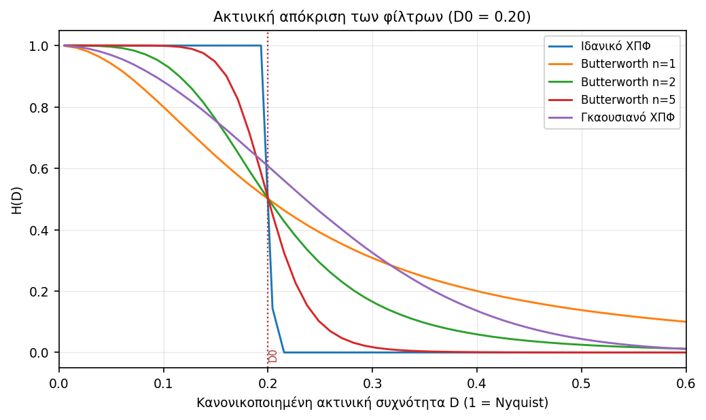
Εικόνα 12. Ακτινικές αποκρίσεις των πέντε χαμηλοπερατών φίλτρων στην ίδια συχνότητα αποκοπής. Όλα τα Butterworth περνούν από το ίδιο σημείο H = 0,5 στο D0· αυτό που αλλάζει με το n είναι μόνο η κλίση της μετάβασης.
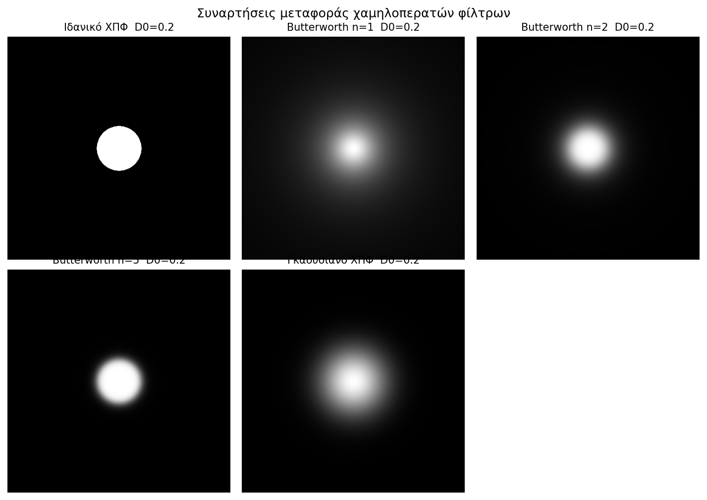
Εικόνα 13. Οι ίδιες συναρτήσεις μεταφοράς ως δισδιάστατες μάσκες στο επίπεδο συχνοτήτων.
7.2 Αποτελέσματα
Πίνακας 5 — Βέλτιστο PSNR (dB) ανά φίλτρο, με τη βέλτιστη συχνότητα αποκοπής
Εικόνα
Υποβάθμιση
r(SNR=1) πρόβλεψη Στ. 3
Ιδανικό
Butter. n=1
Butter. n=2
Butter. n=5
Γκαουσιανό
Cameraman
Gauss σ=10
0,713
29,46 @ 0,75
31,10 @ 0,75
31,02 @ 0,75
30,35 @ 0,75
31,10 @ 0,60
Cameraman
Gauss σ=25
0,370
25,87 @ 0,30
26,84 @ 0,45
26,94 @ 0,45
26,44 @ 0,45
26,97 @ 0,30
Cameraman
S&P d=2 %
0,403
26,51 @ 0,45
27,52 @ 0,45
27,59 @ 0,45
27,09 @ 0,45
27,47 @ 0,45
Cameraman
S&P d=10 %
0,249
22,96 @ 0,30
23,60 @ 0,20
23,67 @ 0,30
23,39 @ 0,30
23,75 @ 0,20
Moon
Gauss σ=10
0,271
36,45 @ 0,30
37,24 @ 0,20
37,40 @ 0,30
37,01 @ 0,30
37,40 @ 0,20
Moon
Gauss σ=25
0,138
33,62 @ 0,15
34,37 @ 0,15
34,59 @ 0,15
34,16 @ 0,15
34,48 @ 0,15
Moon
S&P d=2 %
0,193
34,52 @ 0,20
35,40 @ 0,15
35,44 @ 0,20
35,05 @ 0,20
35,54 @ 0,15
Moon
S&P d=10 %
0,094
32,09 @ 0,10
32,37 @ 0,10
32,67 @ 0,10
32,41 @ 0,10
32,53 @ 0,10
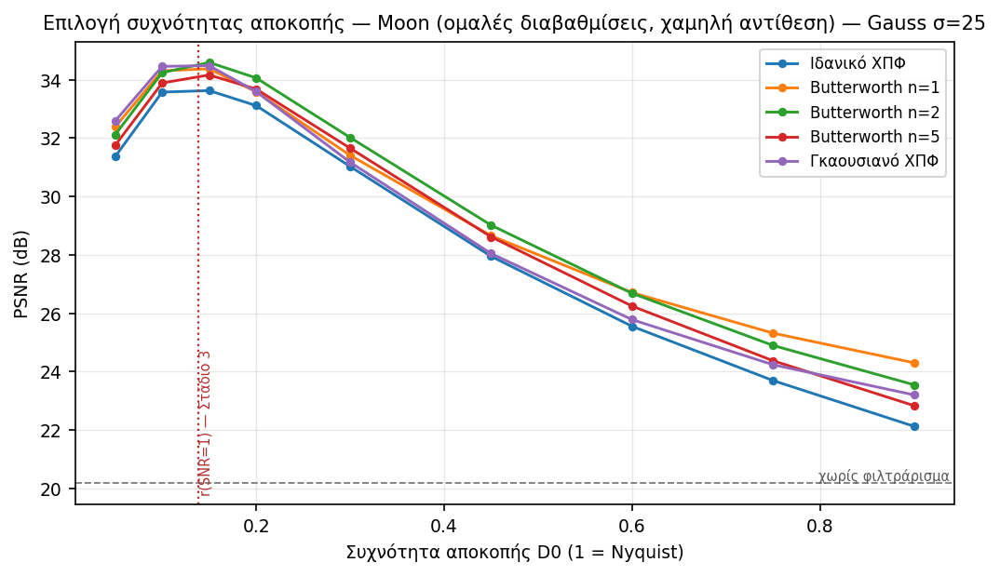
Εικόνα 14. PSNR συναρτήσει της συχνότητας αποκοπής (Moon / Gauss σ = 25). Η κατακόρυφη διακεκομμένη γραμμή είναι η πρόβλεψη r(SNR=1) του Σταδίου 3 — περνά πάνω από την κορυφή των καμπυλών.
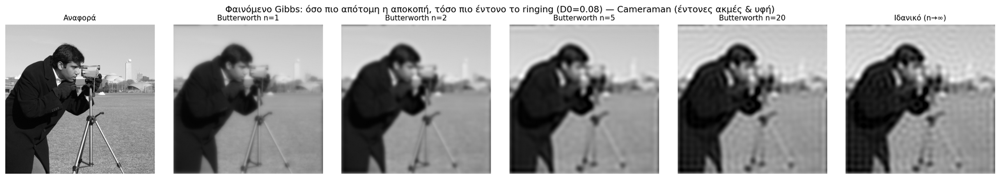
Εικόνα 15. Επίδειξη του φαινομένου Gibbs με σταθερή συχνότητα αποκοπής: n = 1 και n = 2 καθαρά, n = 5 αρχίζει, n = 20 και ιδανικό γεμάτα ομόκεντρους κυματισμούς. Το ringing δεν το προκαλεί το «πόσο» κόβουμε, αλλά το «πόσο απότομα».
7.3 Σχολιασμός
Η πρόβλεψη του Σταδίου 3 επαληθεύτηκε — και είναι το ισχυρότερο εύρημα της εργασίας.
Το βέλτιστο D0 πέφτει στο ίδιο σημείο του πλέγματος με το r(SNR=1) σε 8 από τις 8
περιπτώσεις: 0,75↔0,713 · 0,30↔0,370 · 0,45↔0,403 · 0,30↔0,249 · 0,30↔0,271 ·
0,15↔0,138 · 0,20↔0,193 · 0,10↔0,094. Δεν είναι σύμπτωση: το r(SNR=1) είναι εξ ορισμού
το σημείο όπου η ισχύς του θορύβου ξεπερνά την ισχύ του σήματος, άρα πέρα από εκεί κάθε
συχνότητα που κρατάμε προσθέτει περισσότερο σφάλμα από πληροφορία. Η συχνότητα αποκοπής
δεν χρειάζεται να βρεθεί με δοκιμές — προκύπτει από την ανάλυση φάσματος.
Το ιδανικό φίλτρο χάνει σε κάθε γραμμή, σταθερά ~1 dB κάτω από τα ομαλά. Αιτία το
φαινόμενο Gibbs: απότομη αποκοπή στις συχνότητες ⇒ πυρήνας sinc στον χώρο, με
ουρές που ταλαντώνονται και παράγουν «απόηχους» γύρω από τις ακμές (Εικόνα 15).
Η τάξη n του Butterworth: το n = 2 είναι η σωστή επιλογή, τεκμηριωμένα. Νικά σε
7 από τις 8 περιπτώσεις· στη μοναδική εξαίρεση το n = 1 προηγείται κατά 0,08 dB,
δηλαδή στα όρια του θορύβου μέτρησης. Το n = 5 χάνει και στις 8. Η εξήγηση είναι
πάλι το Gibbs: όσο μεγαλώνει το n, τόσο το φίλτρο πλησιάζει το ιδανικό — μαζί με το
ringing του. Το n = 1 υστερεί για τον αντίθετο λόγο: η μετάβασή του είναι τόσο ομαλή που
αφήνει θόρυβο να περάσει πάνω από το D0. Το n δεν είναι παράμετρος «όσο μεγαλύτερη τόσο
καλύτερα»: υπάρχει βέλτιστο, και βρίσκεται χαμηλά.
Το γκαουσιανό δεν κάνει ποτέ ringing, γιατί ο μετασχηματισμός Fourier μιας γκαουσιανής
είναι γκαουσιανή — θετική παντού, χωρίς ταλαντώσεις.
Το D0 δεν συγκρίνεται απευθείας μεταξύ οικογενειών. Στο ίδιο D0 το Butterworth δίνει
H = 0,5 ενώ το γκαουσιανό exp(−0,5) ≈ 0,61 — διαφορετικό πραγματικό εύρος ζώνης. Γι'
αυτό το γκαουσιανό βρίσκει συχνά το βέλτιστό του σε μικρότερο D0 με το ίδιο PSNR.
Συγκρίνουμε αποτελέσματα, όχι ετικέτες παραμέτρων.
Σύγκριση με το Στάδιο 4. Στον γκαουσιανό θόρυβο τα δύο πεδία δίνουν πρακτικά το ίδιο
(Moon σ = 25: 34,59 dB στις συχνότητες έναντι 33,82 dB χωρικά· η μικρή διαφορά οφείλεται
στο ότι το D0 ρυθμίζεται συνεχώς ενώ το μέγεθος πυρήνα μόνο σε βήματα των 2). Στον S&P
όμως το χωρικό Median κυριαρχεί: Moon / d = 10 % δίνει 39,72 dB έναντι 32,67 dB
του καλύτερου χαμηλοπερατού — διαφορά 7 dB. Το impulse είναι πρόβλημα του πεδίου του
χώρου και απλώνεται σε ολόκληρο το φάσμα· κανένα φίλτρο συχνοτήτων δεν μπορεί να το
απομονώσει.
Το κόστος σε ευκρίνεια είναι δραματικό στη Moon (1,2 %–4,5 % της αρχικής): για να
πέσει το D0 στο 0,10 πετάμε ουσιαστικά όλη τη λεπτομέρεια. Το PSNR ανεβαίνει +16,76 dB
επειδή η Moon δεν είχε πολλή λεπτομέρεια εκεί — σε εικόνα τύπου Cameraman η ίδια
επιλογή θα ήταν καταστροφική.
Μία αρνητική τιμή αξίζει προσοχή: Cameraman / S&P 2 % με ιδανικό φίλτρο δίνει
ΔSSIM = −0,0106 — το PSNR ανέβηκε κατά 4,75 dB αλλά η δομική ομοιότητα
χειροτέρεψε. Το ringing πρόσθεσε ψευδείς δομές που το SSIM τις «βλέπει» ενώ το MSE
τις υποτιμά.
8. Στάδιο 6 — Βελτίωση αντίθεσης
8.1 Η εννοιολογική διάκριση
Πριν από κάθε αριθμό, χρειάζεται να ξεκαθαριστεί γιατί αυτό το στάδιο δεν κρίνεται με
PSNR:
Η αποκατάσταση (Στάδια 4–5) προσπαθεί να πλησιάσει το άγνωστο ground truth. Έχει
αντικειμενικό κριτήριο και το PSNR/SSIM πρέπει να ανεβαίνει.
Η βελτίωση κάνει την εικόνα πιο χρήσιμη για έναν παρατηρητή. Μια πετυχημένη βελτίωση
έχει χειρότερο PSNR ως προς την αναφορά, γιατί σκόπιμα αλλάζει τις εντάσεις. Εδώ
μετράμε αντίθεση (std), εντροπία και αξιοποίηση δυναμικής περιοχής.
8.2 Τι υλοποιήθηκε
Τρεις τεχνικές: γραμμική διάταση αντίθεσης (baseline), καθολική ισοστάθμιση
ιστογράμματος (HE) και CLAHE σε τέσσερις συνδυασμούς (clip 2/3/4, πλέγμα 8×8 και
16×16). Το στάδιο χωρίστηκε σε δύο μέρη:
Μέρος Α — οι τεχνικές στις καθαρές εικόνες, για να απομονωθεί η επίδρασή τους
χωρίς να μπερδεύει ο θόρυβος.
Μέρος Β — η σειρά μέσα στην αλυσίδα: η ίδια βελτίωση εφαρμοσμένη (α) στη θορυβώδη
και (β) στην αποκατεστημένη εικόνα.
8.3 Μέρος Α — αποτελέσματα
Πίνακας 6 — Βελτίωση αντίθεσης στις καθαρές εικόνες
Εικόνα
Τεχνική
std (αντίθεση)
Εντροπία
Επίπεδα σε χρήση
SSIM
Cameraman
Αναφορά
73,64
7,232
100 %
1,000
Cameraman
Γραμμική διάταση
82,89
7,176
88,7 %
0,977
Cameraman
HE
73,67
6,945
55,9 %
0,859
Cameraman
CLAHE clip=2, 8×8
67,64
7,687
99,6 %
0,834
Moon
Αναφορά
13,33
4,885
69,5 %
1,000
Moon
Γραμμική διάταση
31,06
4,777
31,3 %
0,757
Moon
HE
74,01
4,719
19,1 %
0,248
Moon
CLAHE clip=2, 8×8
18,53
5,827
96,1 %
0,877
Moon
CLAHE clip=4, 8×8
23,68
6,370
97,7 %
0,709
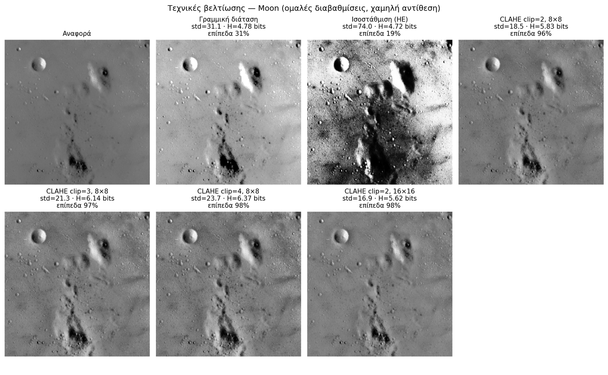
Εικόνα 16. Moon: αναφορά, γραμμική διάταση, HE και οι τέσσερις παραλλαγές CLAHE. Η οπτική διαφορά HE / CLAHE είναι εμφανής: η HE δίνει «σκληρό», σχεδόν posterized αποτέλεσμα.
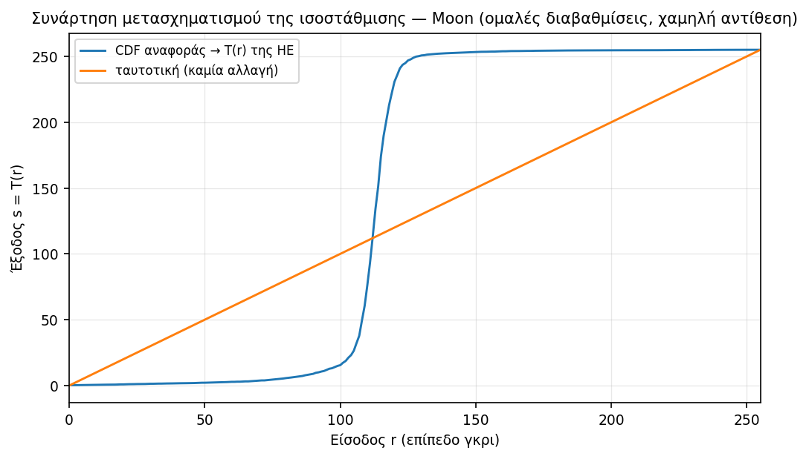
Εικόνα 17. Οι συναρτήσεις μετασχηματισμού s = T(r). Η καμπύλη της HE είναι η CDF του ιστογράμματος: εκεί που είναι απότομη «ανοίγει» επίπεδα, εκεί που είναι επίπεδη τα συγχωνεύει.
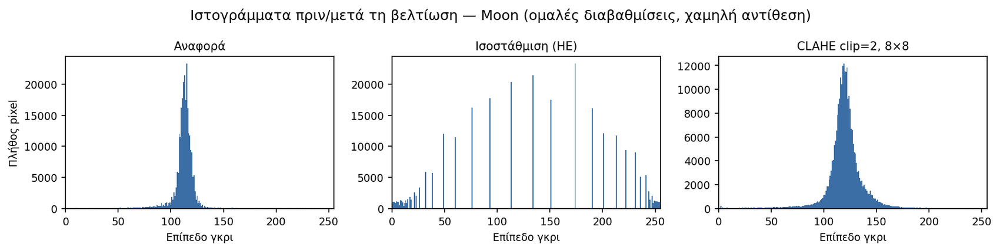
Εικόνα 18. Ιστογράμματα πριν και μετά. Τα «κενά» στο ιστόγραμμα της HE είναι τα χαμένα επίπεδα γκρι — posterization.
8.4 Το παράδοξο της HE
Η HE «πετυχαίνει» θεαματικά και ταυτόχρονα αποτυγχάνει. Στη Moon εκτοξεύει την
αντίθεση από 13,33 σε 74,01 (×5,5). Αλλά η εντροπία πέφτει (4,885 → 4,719) και τα
επίπεδα γκρι σε χρήση καταρρέουν (69,5 % → 19,1 %).
Γιατί συμβαίνει. Η HE είναι μη γραμμική απεικόνιση 256 → 256 τιμών με
στρογγυλοποίηση. Όπου η CDF είναι απότομη ανοίγει τα επίπεδα, όπου είναι επίπεδη τα
συγχωνεύει — και σε 8 bit η συγχώνευση είναι μη αναστρέψιμη. Η Moon έχει στενό
ιστόγραμμα, οπότε ~200 γειτονικά επίπεδα καταρρέουν σε ~49. Το φαινόμενο λέγεται
posterization.
Το SSIM 0,248 είναι η ποσοτική απόδειξη. Η καθολική καμπύλη T(r) επιβάλλεται σε
ΟΛΗ την εικόνα ανεξάρτητα από τοπικό περιεχόμενο, και αλλοιώνει τη δομή.
Η CLAHE κάνει το αντίθετο. Ανεβάζει την εντροπία (4,885 → 5,827, +19 %), τα
επίπεδα σε χρήση στο 96,1 %, και κρατά SSIM 0,877: προσθέτει ορατή πληροφορία
αντί να τη διαγράφει. Το κλειδί είναι διπλό: (α) η ισοστάθμιση είναι τοπική (ανά
πλακίδιο, με παρεμβολή μεταξύ πλακιδίων), (β) το clip limit ψαλιδίζει το τοπικό
ιστόγραμμα πριν τη CDF, περιορίζοντας πόσο απότομη μπορεί να γίνει η ενίσχυση.
Το clip limit είναι ρυθμιστής συμβιβασμού. clip 2 → 4 ανεβάζει την εντροπία
(5,83 → 6,37) αλλά ρίχνει το SSIM (0,877 → 0,709): πιο επιθετική ενίσχυση = περισσότερη
ορατή λεπτομέρεια αλλά και περισσότερη αλλοίωση.
Στον Cameraman η βελτίωση προσφέρει λίγα — και αυτό είναι σωστό αποτέλεσμα. Η εικόνα
ήδη χρησιμοποιεί 100 % των επιπέδων με std 73,6: δεν υπάρχει αχρησιμοποίητη δυναμική
περιοχή να ανακτηθεί. Η βελτίωση αντίθεσης αξίζει μόνο όταν υπάρχει αντίθεση να
κερδηθεί — ακριβώς γι' αυτό επιλέχθηκε η Moon στο Στάδιο 1.
8.5 Μέρος Β — η σειρά στην αλυσίδα
Πίνακας 7 — Ίδια βελτίωση, δύο θέσεις στην αλυσίδα (Moon, Gauss σ = 25)
Στάδιο
Βελτίωση
std
PSNR
SSIM
Ευκρίνεια (% αναφοράς)
Θορυβώδης
καμία
28,22
20,17
0,128
6 959 %
Θορυβώδης
+ HE
73,79
10,94
0,032
52 864 %
Θορυβώδης
+ CLAHE
54,71
13,47
0,048
29 685 %
Αποκατεστημένη
καμία
12,87
34,00
0,823
48 %
Αποκατεστημένη
+ HE
73,81
11,24
0,092
5 566 %
Αποκατεστημένη
+ CLAHE
20,49
23,57
0,506
332 %
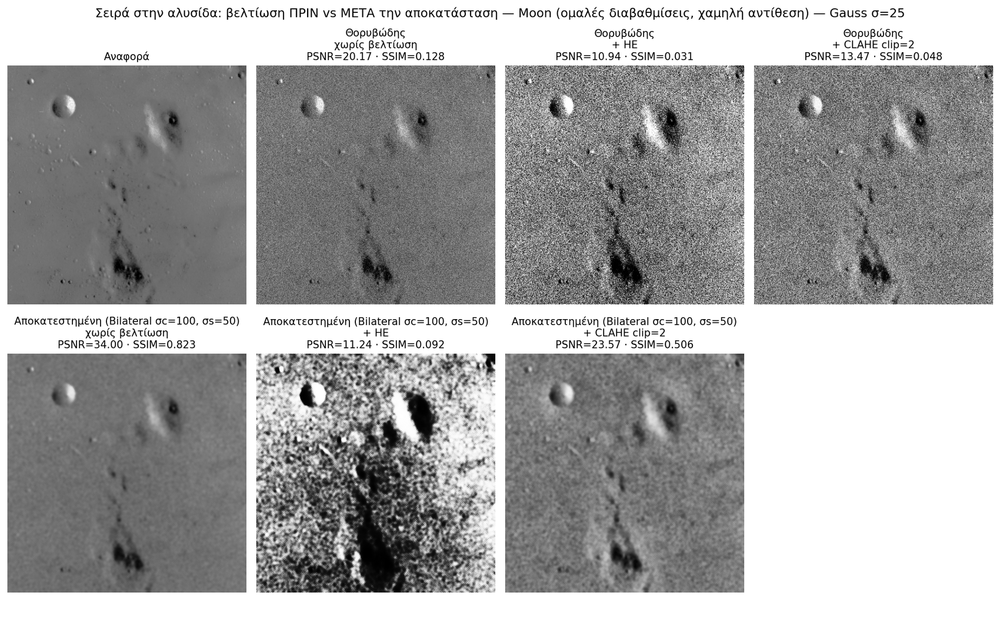
Εικόνα 19. Moon / Gauss σ = 25: η ίδια βελτίωση πάνω στη θορυβώδη (πάνω σειρά) και πάνω στην αποκατεστημένη (κάτω σειρά). Η διαφορά δεν χρειάζεται μετρική για να φανεί.
Η βελτίωση δεν διακρίνει σήμα από θόρυβο — τον ενισχύει εξίσου πρόθυμα. Η στήλη
ευκρίνειας λειτουργεί εδώ ως δείκτης ενίσχυσης θορύβου: η HE πάνω στη θορυβώδη εικόνα
την εκτοξεύει στο 52 864 % της αναφοράς. Δεν είναι λεπτομέρεια — είναι θόρυβος που
έγινε ορατός.
Η σειρά έχει τεράστια σημασία. Ίδια τεχνική (CLAHE), δύο σειρές: πάνω στη θορυβώδη
δίνει SSIM 0,048, πάνω στην αποκατεστημένη 0,506 — δεκαπλάσιο. Πρώτα
αποκατάσταση, μετά βελτίωση. Η αντίστροφη σειρά ενισχύει τον θόρυβο και τον κάνει
δυσκολότερο να αφαιρεθεί μετά, γιατί η ενίσχυση είναι μη γραμμική και δεν αντιστρέφεται.
Και η σωστή σειρά έχει κόστος σε PSNR (23,57 έναντι 34,00). Είναι αναμενόμενο, όχι
σφάλμα: το ερώτημα δεν είναι «πόσο μοιάζει με την αναφορά» αλλά «πόσα βλέπει ο
παρατηρητής». Στην Εικόνα 19 η αποκατεστημένη + CLAHE δείχνει κρατήρες που στην ίδια την
αναφορά μόλις διακρίνονται.
Η HE είναι ακατάλληλη σε κάθε θέση αυτής της αλυσίδας — SSIM 0,092 ακόμη και πάνω
στην καθαρή αποκατεστημένη εικόνα.
9. Στάδιο 7 — Ανίχνευση ακμών
9.1 Γιατί αυτό το στάδιο κρίνει όλη την εργασία
Η ανίχνευση ακμών είναι ο τελικός «καταναλωτής» της αλυσίδας: αν η αποκατάσταση πέτυχε,
πρέπει να φαίνεται εδώ, σε πραγματική εργασία όρασης, όχι μόνο σε έναν δείκτη. Είναι
ταυτόχρονα η πιο ευάλωτη στον θόρυβο πράξη, και ο λόγος είναι μαθηματικός: η παραγώγιση
ενισχύει τις υψηλές συχνότητες (∂/∂x ↔ πολλαπλασιασμός με j2πu). Ο θόρυβος ζει ακριβώς
εκεί (Στάδιο 3), άρα ενισχύεται δυσανάλογα. Γι' αυτό κάθε σοβαρός ανιχνευτής εξομαλύνει
πρώτα.
9.2 Τι υλοποιήθηκε
Sobel (συνιστώσες Gx, Gy, μέτρο κλίσης, κατωφλίωση σε εκατοστημόριο), Canny με τρία
ζεύγη κατωφλίων υστέρησης, Canny προσαρμοστικό, και αξιολόγηση χάρτη ακμών με
precision / recall / F1 και ανοχή θέσης 2 pixel (μέσω μετασχηματισμού απόστασης). Το στάδιο
έχει τρία μέρη: οι τελεστές στην καθαρή εικόνα (παράγουν τους χάρτες αναφοράς), οι ίδιοι
τελεστές στην αποκατεστημένη με πλήρη σάρωση κατωφλίων και μετρικές, και η τελική
σύγκριση θορυβώδης έναντι αποκατεστημένης για τις 8 περιπτώσεις × 3 ανιχνευτές.
9.3 Δύο μεθοδολογικές αποφάσεις που αλλάζουν το συμπέρασμα
Κατωφλίωση σε εκατοστημόριο, όχι σε απόλυτη τιμή. Κρατάμε το ισχυρότερο 8 % των
pixel, ώστε το πλήθος των ακμών να μη μεταβάλλεται απλώς επειδή άλλαξε η αντίθεση.
Ανοχή θέσης 2 pixel. Μια ακμή μετατοπισμένη κατά 1 pixel είναι σωστά ανιχνευμένη
ακμή, όχι σφάλμα. Χωρίς ανοχή, κάθε εξομάλυνση θα τιμωρούνταν άδικα.
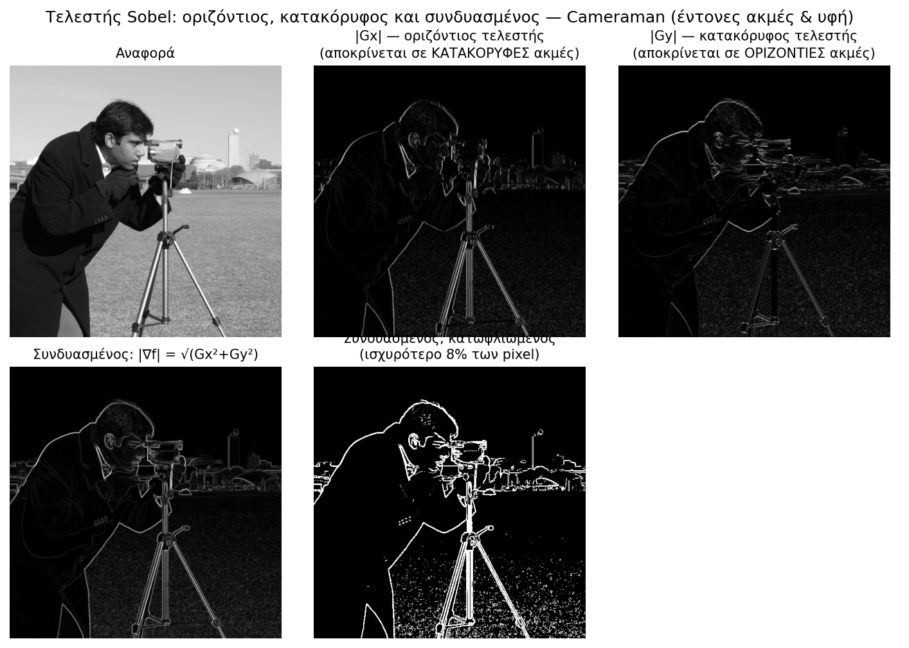
Εικόνα 20. Cameraman: Gx, Gy, μέτρο κλίσης και κατωφλιωμένος χάρτης. Οι δύο πρώτες εικόνες δείχνουν ότι ο Sobel είναι κατευθυντικός: ο Gx αναδεικνύει κατακόρυφες ακμές, ο Gy οριζόντιες.
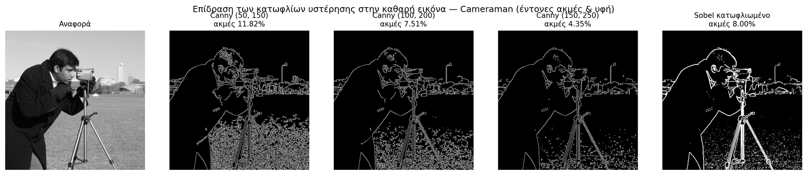
Εικόνα 21. Επίδραση των κατωφλίων υστέρησης του Canny: 11,82 % ακμές με (50, 150) έναντι 4,35 % με (150, 250) — τριπλάσια διαφορά από τα ίδια δεδομένα.
9.4 Αποτελέσματα
Πίνακας 8 — F1 ανίχνευσης ακμών ως προς τον χάρτη της αναφοράς
Εικόνα
Υποβάθμιση
Sobel θορυβώδης
Sobel αποκατ.
Canny-προσ. θορυβ.
Canny-προσ. αποκατ.
Cameraman
Gauss σ=10
0,971
0,960
0,834
0,886
Cameraman
Gauss σ=25
0,838
0,921
0,574
0,783
Cameraman
S&P d=2 %
0,588
0,943
0,689
0,909
Cameraman
S&P d=10 %
0,412
0,944
0,577
0,905
Moon
Gauss σ=10
0,615
0,855
0,464
0,516
Moon
Gauss σ=25
0,366
0,693
0,458
0,450
Moon
S&P d=2 %
0,282
0,951
0,403
0,834
Moon
S&P d=10 %
0,318
0,956
0,455
0,833
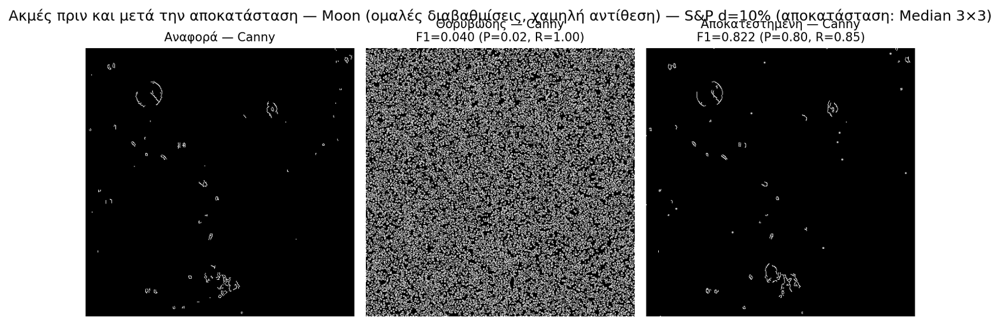
Εικόνα 22. Moon / S&P d = 10 %: χάρτες ακμών χωρίς και με αποκατάσταση. Στη θορυβώδη εικόνα ο ανιχνευτής βρίσκει χιλιάδες ψεύτικες ακμές — κάθε κουκκίδα θορύβου είναι απότομη μεταβολή.
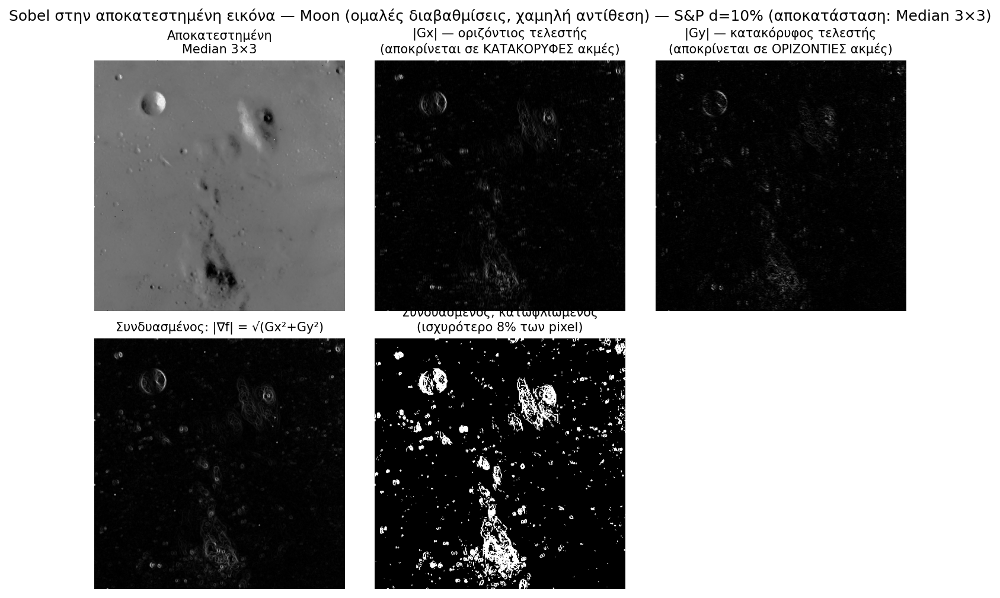
Εικόνα 23. Πλήρες πάνελ Sobel πάνω στην αποκατεστημένη Moon / S&P 10 %: οριζόντιος, κατακόρυφος, συνδυασμένος και κατωφλιωμένος χάρτης (F1 = 0,956).
9.5 Σχολιασμός
Η αποκατάσταση αποδεικνύεται χρήσιμη σε πραγματική εργασία. Moon / S&P d = 10 %:
το F1 του Sobel πάει από 0,318 σε 0,956 — τριπλασιασμός. Cameraman / S&P d = 10 %:
0,412 → 0,944. Το ενδιάμεσο κέρδος των +23,8 dB του Σταδίου 4 μεταφράστηκε σε
σχεδόν τέλεια ανίχνευση.
Το μοτίβο precision/recall δείχνει τι είδους σφάλμα κάνει ο θόρυβος. Στις θορυβώδεις
εικόνες το recall είναι σχεδόν 1,0 ενώ η precision καταρρέει (Moon / σ = 25:
P = 0,30, R = 0,99). Ο ανιχνευτής δεν χάνει ακμές — εφευρίσκει ψεύτικες. Μετά την
αποκατάσταση η precision εκτοξεύεται (0,22 → 0,96) με μικρό κόστος στο recall.
Ο θόρυβος δεν κρύβει ακμές· παράγει ψεύτικες.
Μία εξαίρεση, καταγεγραμμένη ειλικρινά: Cameraman / Gauss σ = 10 με Sobel, η
αποκατάσταση χειροτερεύει ελαφρά το F1 (0,971 → 0,960). Ο θόρυβος είναι ήπιος και η
εικόνα πλούσια σε λεπτομέρεια, οπότε η εξομάλυνση κοστίζει περισσότερο απ' όσο κερδίζει.
Η αποκατάσταση δεν είναι δωρεάν — αξίζει όταν ο θόρυβος υπερβαίνει τη λεπτομέρεια που
θυσιάζεται.
Μεθοδολογικό εύρημα: τα σταθερά κατώφλια Canny είναι άδικα σε φιλτραρισμένες εικόνες.
Με σταθερά (100, 200) η αποκατεστημένη έβγαζε recall ~0,47 και φαινόταν χειρότερη από
τη θορυβώδη — όχι επειδή έχασε ακμές, αλλά επειδή η εξομάλυνση μειώνει το μέτρο της
κλίσης ενώ τα κατώφλια έμειναν ίδια. Με κατώφλια δεμένα στην κατανομή της κλίσης,
η αποκατεστημένη κερδίζει σε 7 από τις 8 περιπτώσεις. Σημειώνεται ότι ο γνωστός
κανόνας «auto-Canny» (κατώφλια από τη διάμεσο της έντασης) δοκιμάστηκε και δεν
λύνει το πρόβλημα: η ένταση δεν αλλάζει με την εξομάλυνση, η κλίση αλλάζει.
Ο Canny δεν είναι πάντα ο νικητής. Στη Moon ο Sobel με κατωφλίωση εκατοστημορίου
δίνει σταθερά καλύτερο F1 (0,956 έναντι 0,833). Η καταστολή μη μεγίστων του Canny
προϋποθέτει καλά ορισμένες κορυφές κλίσης· στις πολύ ομαλές μεταβάσεις της Moon η κορυφή
είναι πλατιά και η λέπτυνση σε 1 pixel γίνεται ασταθής.
Ποια κατώφλια είναι σωστά για την αποκατεστημένη εικόνα; Εξαρτάται από το πόσο βαρύ
ήταν το φιλτράρισμα. Στη σάρωση πάνω στην αποκατεστημένη τα υψηλά κατώφλια
(150, 250) κερδίζουν σε 5 από τις 8 περιπτώσεις και τα χαμηλά (50, 150) στις
υπόλοιπες 3 — που είναι ακριβώς οι περιπτώσεις με τον βαρύτερο θόρυβο, όπου η
αποκατάσταση χρειάστηκε την πιο επιθετική εξομάλυνση. Η precision μένει ψηλά σε κάθε
ρύθμιση (0,798–0,999), δηλαδή οι ψεύτικες ακμές έχουν ήδη εξαλειφθεί· αυτό που κρίνει
τον νικητή είναι σχεδόν αποκλειστικά το recall — και το recall είναι ακριβώς αυτό που
θυσιάζει ένα υψηλό κατώφλι.
Ο κατωφλιωμένος Sobel νικά τον Canny σε 8 από τις 8 γραμμές της αποκατεστημένης
(F1 0,693–0,956 έναντι 0,375–0,881). Δεν σημαίνει ότι είναι «καλύτερος ανιχνευτής»:
σημαίνει ότι η κατωφλίωση σε εκατοστημόριο προσαρμόζεται αυτόματα στην εικόνα, ενώ
τα απόλυτα κατώφλια όχι.
10. Στάδιο 8 — Συγκεντρωτική αξιολόγηση
10.1 Πώς έγινε η σύγκριση
Όλες οι μέθοδοι αποκατάστασης των Σταδίων 4 και 5 μπήκαν σε κοινή λίστα και κρίθηκαν με
ταυτόσημα κριτήρια: 12 χωρικά φίλτρα + 5 οικογένειες χαμηλοπερατών × 9 συχνότητες αποκοπής
= 57 μέθοδοι ανά περίπτωση, δηλαδή 456 αξιολογήσεις συνολικά. Έτσι η σύγκριση «χωρικό
έναντι συχνοτήτων» γίνεται μία φορά, καθαρά, χωρίς να ευνοείται καμία πλευρά από την επιλογή
παραμέτρου.
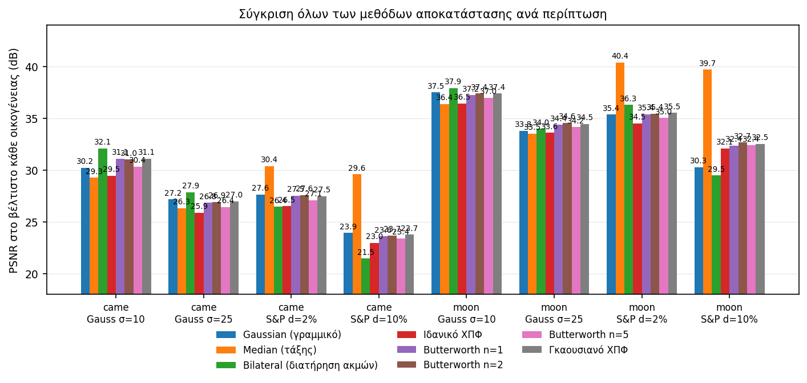
Εικόνα 24. Όλες οι οικογένειες φίλτρων, όλες οι περιπτώσεις, σε ένα ραβδόγραμμα. Το μοτίβο είναι εμφανές: το Median κυριαρχεί στις τέσσερις περιπτώσεις S&P, το Bilateral / Butterworth στις τέσσερις γκαουσιανές.
10.2 Ο νικητής ανά περίπτωση
Πίνακας 9 — Καλύτερη μέθοδος αποκατάστασης ανά περίπτωση
Εικόνα
Υποβάθμιση
PSNR πριν
Νικητής
PSNR μετά
ΔPSNR
Χωρικό − Συχνοτήτων
Cameraman
Gauss σ=10
28,22
Bilateral σc=25
32,09
+3,86
+0,98 dB
Cameraman
Gauss σ=25
20,58
Bilateral σc=50
27,86
+7,28
+0,88 dB
Cameraman
S&P d=2 %
21,76
Median 3×3
30,40
+8,64
+2,81 dB
Cameraman
S&P d=10 %
14,75
Median 3×3
29,58
+14,83
+5,84 dB
Moon
Gauss σ=10
28,12
Bilateral σc=25
37,94
+9,82
+0,54 dB
Moon
Gauss σ=25
20,17
Butterworth n=2, D0=0,15
34,59
+14,41
−0,59 dB
Moon
S&P d=2 %
22,91
Median 3×3
40,42
+17,51
+4,88 dB
Moon
S&P d=10 %
15,91
Median 3×3
39,72
+23,82
+7,06 dB
10.3 Ο συγκεντρωτικός πίνακας της αλυσίδας
Πίνακας 10 — PSNR (dB) / SSIM σε κάθε βήμα της αλυσίδας
Εικόνα
Υποβάθμιση
1. Υποβαθμισμένη
2. Καλύτερο χωρικό
3. Καλύτερο συχνοτικό
4. Μετά τη βελτίωση
Cameraman
Gauss σ=10
28,22 / 0,610
32,09 / 0,865 Bilateral σc=25
31,10 / 0,784 Γκαουσιανό D0=0,60
22,74 / 0,739
Cameraman
Gauss σ=25
20,58 / 0,302
27,86 / 0,674 Bilateral σc=50
26,97 / 0,652 Γκαουσιανό D0=0,30
20,33 / 0,431
Cameraman
S&P d=2 %
21,76 / 0,629
30,40 / 0,867 Median 3×3
27,59 / 0,702 Butterworth n=2 D0=0,45
22,42 / 0,791
Cameraman
S&P d=10 %
14,75 / 0,192
29,58 / 0,858 Median 3×3
23,75 / 0,539 Γκαουσιανό D0=0,20
22,11 / 0,774
Moon
Gauss σ=10
28,12 / 0,444
37,94 / 0,907 Bilateral σc=25
37,40 / 0,906 Butterworth n=2 D0=0,30
25,12 / 0,708
Moon
Gauss σ=25
20,17 / 0,128
34,00 / 0,823 Bilateral σc=100
34,59 / 0,879 Butterworth n=2 D0=0,15
24,17 / 0,695
Moon
S&P d=2 %
22,91 / 0,480
40,42 / 0,964 Median 3×3
35,54 / 0,892 Γκαουσιανό D0=0,15
25,71 / 0,892
Moon
S&P d=10 %
15,91 / 0,070
39,72 / 0,965 Median 3×3
32,67 / 0,872 Butterworth n=2 D0=0,10
25,63 / 0,883
Έντονα το καλύτερο από τα δύο πεδία. Βήμα 4 = CLAHE clip = 2 πάνω στην
καλύτερη αποκατάσταση της γραμμής. Πηγή: results/stage8_summary/pipeline_summary.csv.
10.4 Πώς διαβάζεται η στήλη 4 — το PSNR πέφτει, και είναι αναμενόμενο
Σε κάθε γραμμή το PSNR μετά τη βελτίωση είναι χαμηλότερο από το PSNR της αποκατάστασης
(π.χ. 32,09 → 22,74). Δεν είναι σφάλμα και δεν σημαίνει ότι η CLAHE χάλασε την εικόνα.
Το PSNR μετρά pixel-προς-pixel απόκλιση από την αναφορά, ενώ η βελτίωση σκοπίμως
αλλάζει την κατανομή των εντάσεων για να ανεβάσει την τοπική αντίθεση:
Η αποκατάσταση είναι πρόβλημα αντιστροφής — στόχος της είναι το ground truth, άρα το
PSNR/SSIM είναι το σωστό κριτήριο και πρέπει να ανεβαίνει.
Η βελτίωση δεν είναι πρόβλημα αντιστροφής — στόχος της είναι μια πιο ευανάγνωστη
εικόνα, όχι πιο κοντινή στην αναφορά. Κρινόμενη με PSNR είναι εξ ορισμού χαμένη.
Το κέρδος της μετριέται με άλλα μεγέθη, και εκεί το πρόσημο αντιστρέφεται:
Πίνακας 11 — Το κέρδος της βελτίωσης εκεί που φαίνεται
Εικόνα
Υποβάθμιση
Εντροπία: υποβαθμ. → αποκατ. → βελτ.
Επίπεδα γκρι σε χρήση: πριν → μετά
Cameraman
Gauss σ=25
7,71 → 7,26 → 7,71
95,70 % → 98,05 %
Cameraman
S&P d=10 %
7,07 → 7,11 → 7,64
99,61 % → 99,61 %
Moon
Gauss σ=25
6,84 → 5,03 → 6,08
91,41 % → 94,53 %
Moon
S&P d=2 %
4,94 → 4,82 → 5,73
68,75 % → 96,09 %
Moon
S&P d=10 %
4,96 → 4,83 → 5,75
69,14 % → 96,88 %
Η Moon με S&P είναι η καθαρότερη περίπτωση: η CLAHE ανεβάζει τα επίπεδα γκρι σε χρήση
από 69 % σε 97 % και την εντροπία κατά ~0,9 bits. Είναι πραγματικό κέρδος
αναγνωσιμότητας, το οποίο το PSNR δεν μπορεί να δει· το SSIM, που κοιτάζει δομή και όχι
απόλυτες τιμές, το βλέπει εν μέρει (μένει στο 0,89 ενώ το PSNR κατρακυλά).
Μια παγίδα σε αυτόν τον πίνακα: η εντροπία της υποβαθμισμένης είναι συχνά μεγαλύτερη
από της αποκατεστημένης (Moon / σ = 25: 6,84 έναντι 5,03). Δεν έχει περισσότερη πληροφορία —
ο θόρυβος ανεβάζει την εντροπία επειδή απλώνει τυχαία το ιστόγραμμα. Η εντροπία μετρά
αβεβαιότητα, και ο θόρυβος είναι αβεβαιότητα. Γι' αυτό έχει νόημα ως κριτήριο μόνο
μεταξύ εικόνων με τον ίδιο θόρυβο — δηλαδή πριν και μετά τη βελτίωση, όπως χρησιμοποιείται
εδώ.
10.5 Η αλυσίδα από άκρη σε άκρη
Πίνακας 12 — Από το PSNR στην ανίχνευση ακμών
Εικόνα
Υποβάθμιση
PSNR πριν → μετά
F1 ακμών χωρίς → με αποκατάσταση
Cameraman
Gauss σ=25
20,58 → 27,86
0,838 → 0,921
Cameraman
S&P d=10 %
14,75 → 29,58
0,412 → 0,944
Moon
Gauss σ=25
20,17 → 34,59
0,366 → 0,733
Moon
S&P d=10 %
15,91 → 39,72
0,318 → 0,956
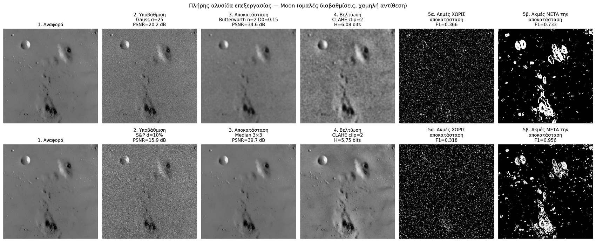
Εικόνα 25. Moon — η πλήρης αλυσίδα: Αναφορά → Υποβάθμιση → Αποκατάσταση → Βελτίωση → Ακμές χωρίς και με αποκατάσταση.
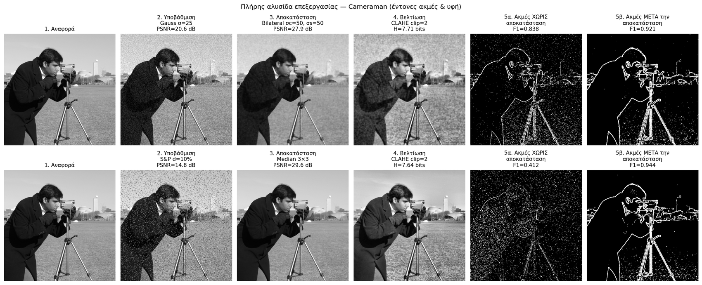
Εικόνα 26. Cameraman — η ίδια αλυσίδα σε εικόνα υψηλής αντίθεσης και πλούσιας υφής.
11. Συμπεράσματα
Δεν υπάρχει καθολικά καλύτερο φίλτρο — υπάρχει καλύτερο φίλτρο για κάθε ΤΥΠΟ θορύβου.
Στις 8 περιπτώσεις οι νικητές μοιράζονται με απόλυτη κανονικότητα: Median και στις 4
περιπτώσεις κρουστικού θορύβου, Bilateral / Butterworth και στις 4 περιπτώσεις
γκαουσιανού. Καμία εξαίρεση.
Η επιλογή πεδίου έχει σημασία μόνο για τον κρουστικό θόρυβο. Στον γκαουσιανό η
διαφορά χωρικού–συχνοτικού είναι ±1 dB — πρακτικά ισοδύναμα, όπως επιβάλλει το
θεώρημα συνέλιξης, αφού πρόκειται για την ίδια πράξη. Στον S&P η διαφορά εκτοξεύεται στα
+2,8 έως +7,1 dB υπέρ του χωρικού. Το είδος του θορύβου, όχι το πεδίο, καθορίζει τη
λύση.
Η βέλτιστη συχνότητα αποκοπής προβλέπεται, δεν αναζητείται. Το r(SNR=1) της
ανάλυσης φάσματος ταυτίστηκε με το πειραματικά βέλτιστο D0 σε 8/8 περιπτώσεις. Η
ανάλυση στο πεδίο συχνοτήτων δεν είναι περιγραφικό στάδιο — είναι εργαλείο σχεδιασμού.
Όσο χειρότερη η υποβάθμιση, τόσο μεγαλύτερο το κέρδος (+3,86 dB στην ηπιότερη
περίπτωση, +23,82 dB στη χειρότερη) — αλλά ποτέ επιστροφή στην αναφορά. Η υποβάθμιση
καταστρέφει πληροφορία μη αναστρέψιμα· η αποκατάσταση κάνει τη βέλτιστη εικασία, δεν
αντιστρέφει.
Μία μετρική δεν αρκεί. PSNR και SSIM δίνουν διαφορετικό νικητή σε 2 από τις 8
περιπτώσεις, και υπάρχει τουλάχιστον μία ρύθμιση όπου το PSNR ανεβαίνει κατά 4,75 dB ενώ
το SSIM πέφτει (ιδανικό φίλτρο, ringing). Δεν είναι θόρυβος μέτρησης — είναι
διαφορετικοί ορισμοί του «καλού»: μέσο τετραγωνικό σφάλμα έναντι δομικής ομοιότητας.
Αποκατάσταση και βελτίωση δεν είναι εναλλακτικές — είναι διαδοχικά βήματα με
συγκεκριμένη σειρά. Η ίδια CLAHE δίνει SSIM 0,048 πάνω στη θορυβώδη και 0,506 πάνω στην
αποκατεστημένη. Και οι δύο κρίνονται με διαφορετικά μεγέθη: η πρώτη με PSNR/SSIM, η
δεύτερη με εντροπία και αξιοποίηση δυναμικής περιοχής.
Η αλυσίδα λειτουργεί ως σύνολο, και το αποδεικνύει το τελευταίο στάδιο. Το κέρδος του
Σταδίου 4 δεν έμεινε στο χαρτί: το F1 ανίχνευσης ακμών πάει 0,318 → 0,956 (Moon /
S&P 10 %) και 0,412 → 0,944 (Cameraman / S&P 10 %).
Το περιεχόμενο της εικόνας καθορίζει τι είναι εφικτό. Η Moon κερδίζει σχεδόν
διπλάσια dB από τον Cameraman στην ίδια υποβάθμιση, επειδή είναι ομαλή: η υπόθεση «οι
γείτονες μοιάζουν» — πάνω στην οποία στηρίζεται κάθε μέθοδος αποθορυβοποίησης —
ισχύει σχεδόν παντού. Αντίστροφα, στο Στάδιο 6 ο Cameraman δεν είχε τίποτα να κερδίσει
από τη βελτίωση αντίθεσης, ενώ η Moon μεταμορφώθηκε.
Η μεθοδολογία μετράει όσο και ο αλγόριθμος. Τρεις φορές μέσα στην εργασία μια
μεθοδολογική επιλογή άλλαξε το συμπέρασμα: ο αποκλεισμός της DC από τις μετρήσεις
ενέργειας (Στάδιο 3), η σύγκριση οικογενειών στα δικά τους βέλτιστα (Στάδιο 4), και τα
κατώφλια Canny δεμένα στη στατιστική της κλίσης (Στάδιο 7) — χωρίς το τελευταίο, η
αποκατάσταση φαινόταν να βλάπτει την ανίχνευση ακμών.
11.1 Περιορισμοί και πιθανές επεκτάσεις
Η υποβάθμιση περιορίστηκε σε θόρυβο· δεν μοντελοποιήθηκε θόλωση (κίνησης ή
εκτός εστίασης). Η προσθήκη της θα δικαιολογούσε αντίστροφα φίλτρα και φίλτρο Wiener,
που είναι η φυσική συνέχεια των Σταδίων 4–5.
Δοκιμάστηκαν δύο εικόνες αναφοράς. Η επιλογή τους ήταν σκόπιμα ακραία, αλλά ένα
μεγαλύτερο σύνολο θα επέτρεπε στατιστική σημαντικότητα αντί για παρατήρηση μοτίβου.
Η αξιολόγηση είναι πλήρως αντικειμενική· δεν έγινε υποκειμενική αξιολόγηση από
παρατηρητές, η οποία είναι το φυσικό κριτήριο για το στάδιο της βελτίωσης.
Σύγχρονες μέθοδοι αποθορυβοποίησης (non-local means, BM3D, νευρωνικά δίκτυα)
βρίσκονται εκτός της ύλης αλλά θα αποτελούσαν φυσικό σημείο σύγκρισης για το πόσο
απέχουν τα κλασικά φίλτρα από το σημερινό state of the art.
12. Αναπαραγωγή των αποτελεσμάτων
python -m pip install -r requirements.txt
python main.py # και τα 8 στάδια με τη σειρά (~2 λεπτά)
python main.py --stage 4 5 # επιλεκτική εκτέλεση σταδίων
Με RANDOM_SEED = 631 και ανά πείραμα γεννήτρια, κάθε αριθμός αυτής της αναφοράς
αναπαράγεται ακριβώς, ανεξάρτητα από τη σειρά εκτέλεσης των σταδίων. Η πλήρης εκτέλεση
παράγει 271 αρχεία στο results/.
R. C. Gonzalez, R. E. Woods, Digital Image Processing, 4th ed., Pearson, 2018.
Z. Wang, A. C. Bovik, H. R. Sheikh, E. P. Simoncelli, «Image quality assessment: from
error visibility to structural similarity», IEEE Trans. Image Processing, 13(4), 2004.
J. Canny, «A Computational Approach to Edge Detection», IEEE Trans. PAMI, 8(6), 1986.
C. Tomasi, R. Manduchi, «Bilateral Filtering for Gray and Color Images»,
Proc. ICCV, 1998.
K. Zuiderveld, «Contrast Limited Adaptive Histogram Equalization», Graphics Gems IV,
1994.